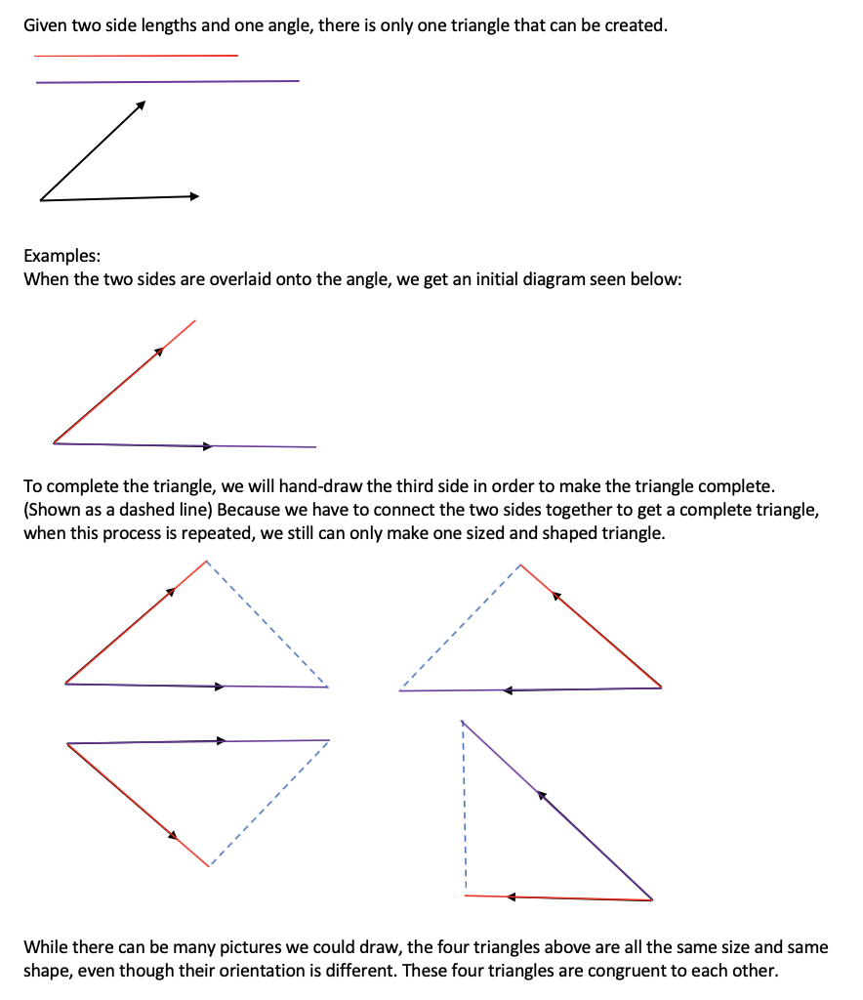
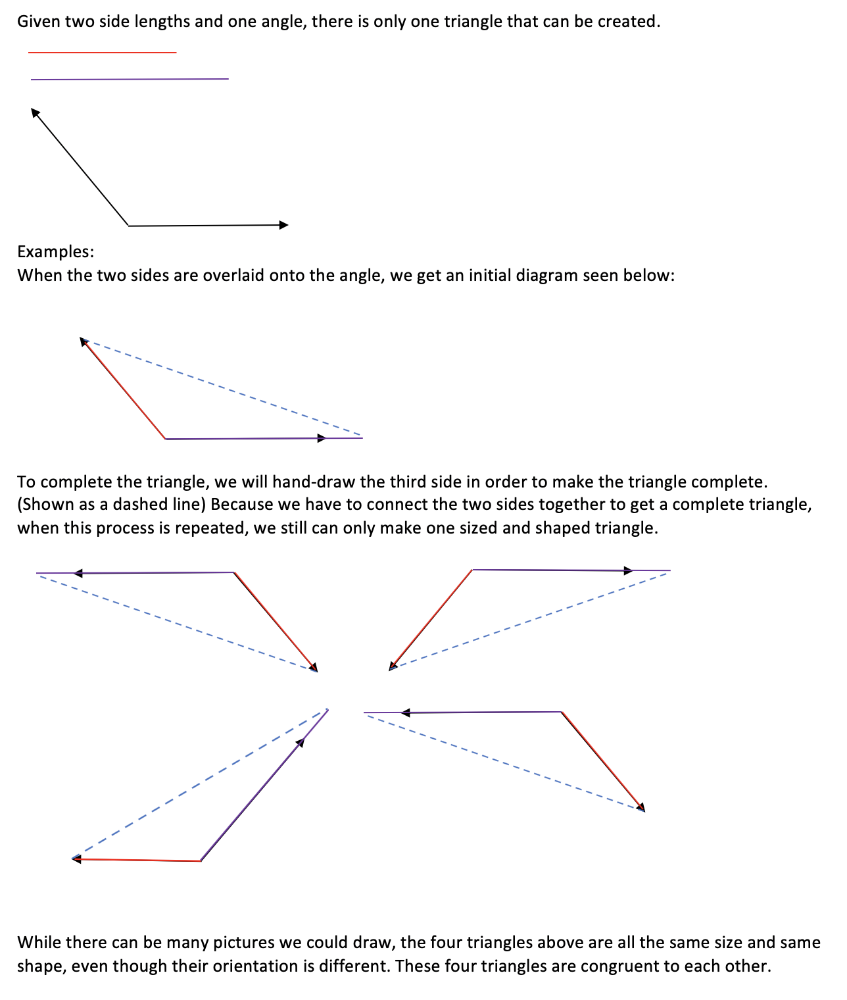
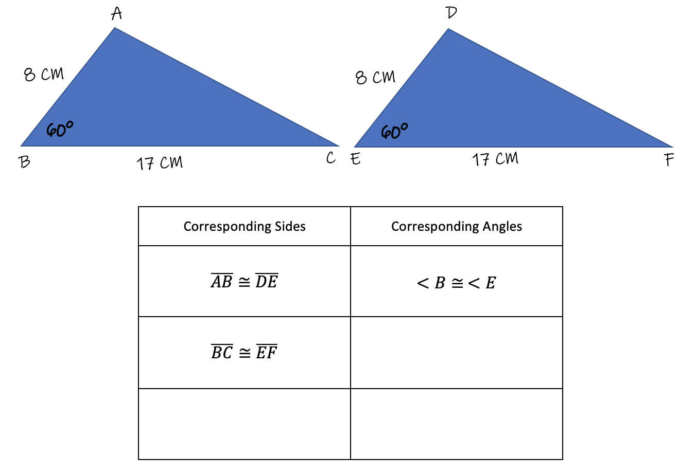
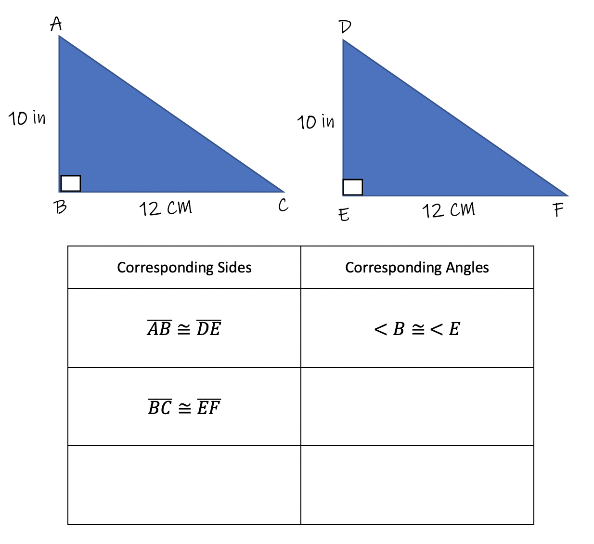

In this module, we continue with the concept of congruent triangles, specifically how to prove two triangles are congruent. We will look at the concept called "Side-Angle-Side" and see there is another way to produce congruent triangles besides using "Side-Side-Side".
Side-Angle-Side
If you are given 2 side lengths and one angle measure of a triangle, there is one and only one triangle that can be created. Therefore, any two triangles that share the same 2 side lengths and the same angle degrees will always be the same size and the same shape, called congruent triangles. Let's look at two examples of Side-Angle-Side.
 
Example 1: Prove the two triangles are congruent using Side-Angle-Side. Show that there are two pairs of congruent sides and one pair of congruent angles: 
Example 2: Prove the two triangles are congruent using Side-Angle-Side. Show that there are two pairs of congruent sides and one pair of congruent angles: 